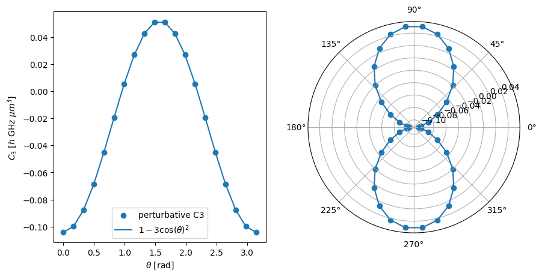
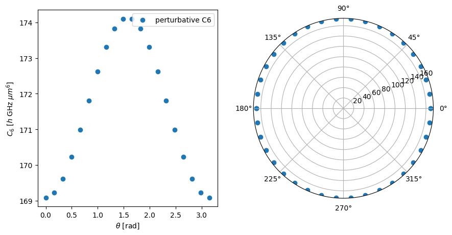

This page was generated from the Jupyter notebook
perturbative_c3_c6.ipynb.
Open in
Google Colab.
\(C_3\) and \(C_6\) Coefficients
[ ]:
%pip install -q matplotlib numpy pairinteraction
import matplotlib.pyplot as plt
import numpy as np
import pairinteraction.real as pi
from pairinteraction import perturbative
[2]:
if pi.Database.get_global_database() is None:
pi.Database.initialize_global_database(download_missing=True)
Example to calculate the angular dependence of the \(C_3\) coefficient
[3]:
ket1 = pi.KetAtom("Rb", n=61, l=0, j=0.5, m=0.5)
ket2 = pi.KetAtom("Rb", n=62, l=1, j=1.5, m=0.5)
c3_obj = perturbative.C3(ket1, ket2)
c3_obj.set_diamagnetism_enabled(False)
c3_obj.set_magnetic_field([0, 0, 20], "gauss")
c3_obj.set_minimum_number_of_ket_pairs(2_000)
c3_obj.set_interaction_order(3);
[4]:
c3_coeffs = []
thetas = np.linspace(0, np.pi, 20)
for theta in thetas:
c3_obj.set_angle(theta, unit="radian")
c3_coeffs.append(c3_obj.get(unit="planck_constant * GHz * micrometer^3"))
[5]:
fig, axs = plt.subplots(1, 2, figsize=(10, 5))
axs[0].scatter(thetas, c3_coeffs, label="perturbative C3")
axs[0].plot(
thetas,
-0.5 * c3_coeffs[0] * (1 - 3 * np.cos(thetas) ** 2),
label=r"$1-3\cos(\theta)^2$",
)
axs[0].legend()
axs[0].set_xlabel(r"$\theta$ [rad]")
axs[0].set_ylabel(r"$C_3$ [$h$ GHz $\mu m^3$]")
axs[1].remove()
axs[1] = fig.add_subplot(1, 2, 2, projection="polar")
axs[1].scatter(
np.append(thetas, thetas + np.pi),
np.append(c3_coeffs, c3_coeffs),
)
axs[1].plot(
np.append(thetas, thetas + np.pi),
-0.5 * c3_coeffs[0] * (1 - 3 * np.cos(np.append(thetas, thetas + np.pi)) ** 2),
)
plt.show()

Example to calculate the angular dependence of the \(C_6\) coefficient
[6]:
ket = pi.KetAtom("Rb", n=61, l=0, j=0.5, m=0.5)
c6_obj = perturbative.C6(ket, ket)
c6_obj.set_diamagnetism_enabled(False)
c6_obj.set_magnetic_field([0, 0, 20], "gauss")
c6_obj.set_minimum_number_of_ket_pairs(2_000)
c6_obj.set_interaction_order(3);
[7]:
c6_coeffs = []
thetas = np.linspace(0, np.pi, 20)
for theta in thetas:
c6_obj.set_angle(theta, unit="radian")
c6_coeffs.append(c6_obj.get(unit="planck_constant * GHz * micrometer^6"))
[8]:
fig, axs = plt.subplots(1, 2, figsize=(10, 5))
axs[0].scatter(thetas, c6_coeffs, label="perturbative C6")
axs[0].legend()
axs[0].set_xlabel(r"$\theta$ [rad]")
axs[0].set_ylabel(r"$C_6$ [$h$ GHz $\mu m^6$]")
axs[1].remove()
axs[1] = fig.add_subplot(1, 2, 2, projection="polar")
axs[1].scatter(
np.append(thetas, thetas + np.pi),
np.append(c6_coeffs, c6_coeffs),
)
plt.show()
